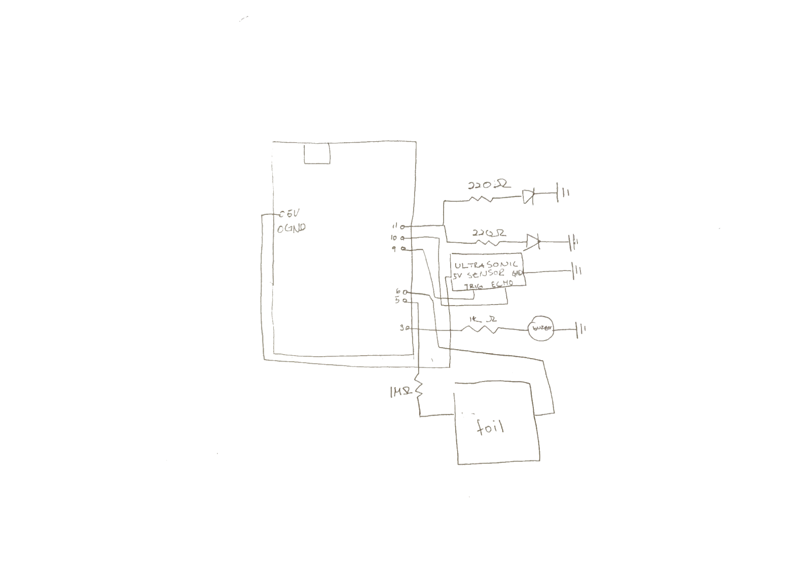
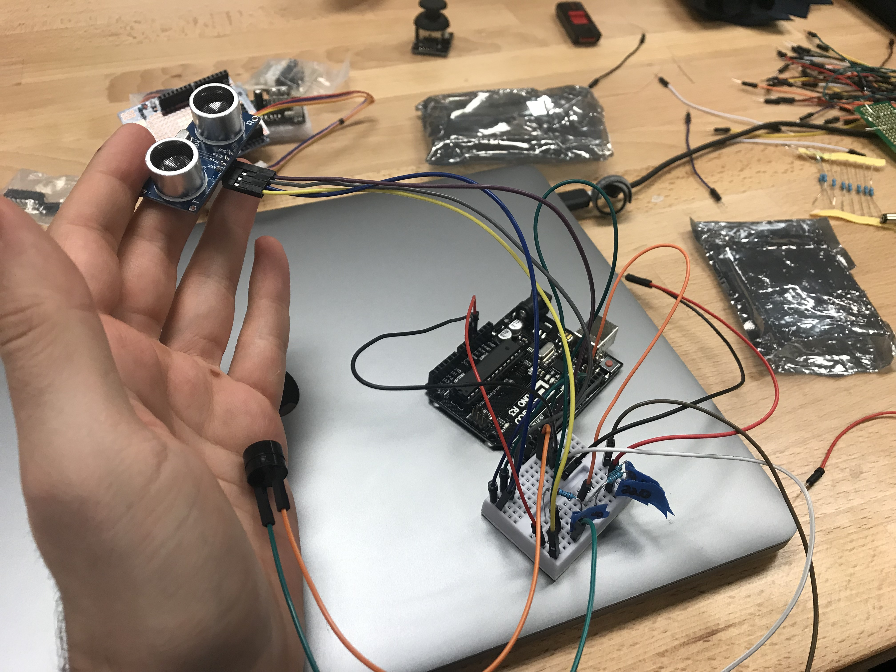
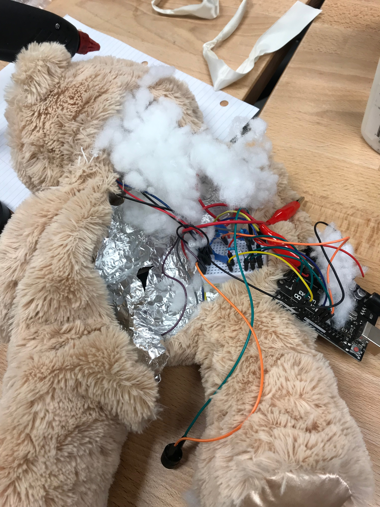

My concept was to have a bear that could let people know if they were in proximity. I was inspired by a spy kit that I had as a kid that included a laser that would sounds an alarm if someone crossed its path. So when people get closer to the bear, its eyes would glow red, and when it is touched, an alarm goes off.

Here is the schematic for Terror bear. I used two 220 ohm resistors that were connected to the red LEDs that were the eyes of the bear. I connected a 1K ohm resistor that was connected to the buzzer, a 1M resistors that was connected to the tin foil that was using for the capacitative touch sensor, and an ultrasonic sensor that could tell how far away an object was to the Terror Bear. All the grounds were connected to the same pin on the breadboard.

I had to fit the entire circuit onto the small breadboard so I could fit it inside of the bear. I also had to take into consideration the possibility of parts coming apart, so I decided to sodder the wires to the LEDs, since they were deep inside of the bear. Since the breadboard was pretty secure once it was inside of the bear, I did not sodder it because I had easy access to it in case a wire came undone.

I cut slits into the bear's eyes to poke the LEDs through. I hot glued the back of the LEDs to the bear so they would stay in the eye sockets. I placed the tin foil in the belly of the bear, and cut out a portion to make room for the ultrasonic sensor and the wires attached to it. I cut two slits to poke the ultrasonic sensor through the bear so it could accurately detect how far away objects are. I originally planned to use a batter as the power source, but the readings changed and I could not reliably debug it, so I ended up having to use my computer as the power source.
One problem that the bear has is that the ultrasonic sensor is not very accurate when it is not a flat object in front of it. I think this is due to the high-pitched noise that the sensor emits scatters when it hits the surface of my hand, so the sensor has a hard time detecting the rebound. Also, I had recalibrate the capacitative touch sensor when I put it inside the bear, as the conditions changed pre-emplementation.